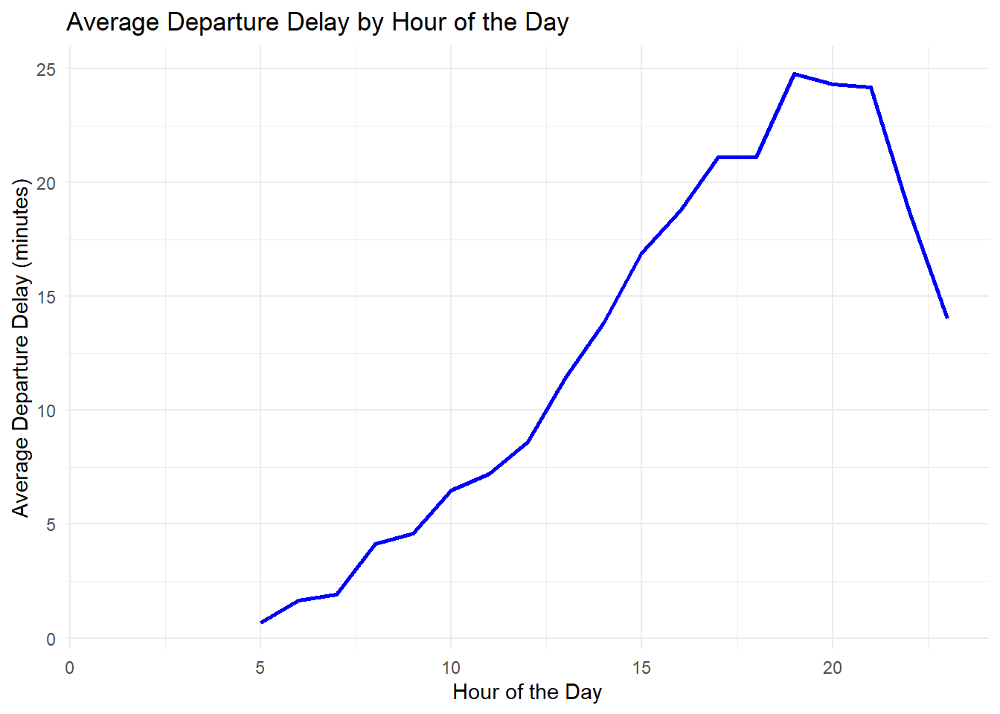

# Load the required library
if(!require("pacman")) install.packages("pacman")Loading required package: pacmanpacman::p_load(tidyverse, nycflights13)
options(scipen=999)# Load the required library
if(!require("pacman")) install.packages("pacman")Loading required package: pacmanpacman::p_load(tidyverse, nycflights13)
options(scipen=999)# Load data
# head(flights)
flights_df <- flights
# glimpse(flights_df)
# ?flights# Question 1: In a single pipeline for each condition, find all flights that meet the condition:
# Had an arrival delay of two or more hours
(arrival_delay_two_or_more_hours <- flights_df |>
filter(arr_delay >= 120) |>
select(flight)) # A tibble: 10,200 × 1
flight
<int>
1 4576
2 3944
3 856
4 1086
5 4497
6 525
7 4181
8 5712
9 4092
10 4622
# ℹ 10,190 more rows# Flew to Houston (IAH or HOU)
(flew_to_houston <- flights_df |>
filter(dest %in% c("IAH", "HOU")) |>
select(flight) )# A tibble: 9,313 × 1
flight
<int>
1 1545
2 1714
3 496
4 473
5 1479
6 1220
7 1004
8 455
9 1086
10 1461
# ℹ 9,303 more rows# Were operated by United, American, or Delta
(operated_by_united_aa_delta <- flights_df |>
filter(carrier %in% c("UA", "AA", "DL")) |>
select(flight)) # A tibble: 139,504 × 1
flight
<int>
1 1545
2 1714
3 1141
4 461
5 1696
6 301
7 194
8 1124
9 707
10 1187
# ℹ 139,494 more rows# Departed in summer (July, August, and September)
(departed_in_summer <- flights_df |>
filter(month %in% c(7, 8, 9)) |>
select(flight)) # A tibble: 86,326 × 1
flight
<int>
1 915
2 1503
3 234
4 1371
5 185
6 165
7 415
8 425
9 1183
10 623
# ℹ 86,316 more rows# Arrived more than two hours late but didn’t leave late
(arrived_2hrs_late_no_dep_delay <- flights_df |>
filter(arr_delay > 120, dep_delay <= 0 ) |>
select(flight)) # A tibble: 29 × 1
flight
<int>
1 3728
2 5181
3 1151
4 3
5 399
6 389
7 4540
8 707
9 2083
10 4674
# ℹ 19 more rows# Were delayed by at least an hour, but made up over 30 minutes in flight
(delayed_1hr_madeup_30min <- flights_df |>
filter(dep_delay >= 60, dep_delay - arr_delay > 30 ) |>
select(flight)) # A tibble: 1,844 × 1
flight
<int>
1 1999
2 199
3 551
4 575
5 177
6 979
7 91
8 3525
9 3439
10 575
# ℹ 1,834 more rows# Sorting flights by the longest departure delays (top 6)
(longest_dep_delays <- flights_df |>
arrange(desc(dep_delay)) |>
head())# A tibble: 6 × 19
year month day dep_time sched_dep_time dep_delay arr_time sched_arr_time
<int> <int> <int> <int> <int> <dbl> <int> <int>
1 2013 1 9 641 900 1301 1242 1530
2 2013 6 15 1432 1935 1137 1607 2120
3 2013 1 10 1121 1635 1126 1239 1810
4 2013 9 20 1139 1845 1014 1457 2210
5 2013 7 22 845 1600 1005 1044 1815
6 2013 4 10 1100 1900 960 1342 2211
# ℹ 11 more variables: arr_delay <dbl>, carrier <chr>, flight <int>,
# tailnum <chr>, origin <chr>, dest <chr>, air_time <dbl>, distance <dbl>,
# hour <dbl>, minute <dbl>, time_hour <dttm># Flights that left earliest in the morning
(flights_with_earliest_departure <- flights_df |>
arrange(dep_time) |>
head())# A tibble: 6 × 19
year month day dep_time sched_dep_time dep_delay arr_time sched_arr_time
<int> <int> <int> <int> <int> <dbl> <int> <int>
1 2013 1 13 1 2249 72 108 2357
2 2013 1 31 1 2100 181 124 2225
3 2013 11 13 1 2359 2 442 440
4 2013 12 16 1 2359 2 447 437
5 2013 12 20 1 2359 2 430 440
6 2013 12 26 1 2359 2 437 440
# ℹ 11 more variables: arr_delay <dbl>, carrier <chr>, flight <int>,
# tailnum <chr>, origin <chr>, dest <chr>, air_time <dbl>, distance <dbl>,
# hour <dbl>, minute <dbl>, time_hour <dttm>(fastest_flights <- flights_df |>
mutate(speed = distance / air_time) |>
arrange(desc(speed)) |>
head())# A tibble: 6 × 20
year month day dep_time sched_dep_time dep_delay arr_time sched_arr_time
<int> <int> <int> <int> <int> <dbl> <int> <int>
1 2013 5 25 1709 1700 9 1923 1937
2 2013 7 2 1558 1513 45 1745 1719
3 2013 5 13 2040 2025 15 2225 2226
4 2013 3 23 1914 1910 4 2045 2043
5 2013 1 12 1559 1600 -1 1849 1917
6 2013 11 17 650 655 -5 1059 1150
# ℹ 12 more variables: arr_delay <dbl>, carrier <chr>, flight <int>,
# tailnum <chr>, origin <chr>, dest <chr>, air_time <dbl>, distance <dbl>,
# hour <dbl>, minute <dbl>, time_hour <dttm>, speed <dbl># Get number of unique days in dataset
(num_unique_days <- flights_df %>%
distinct(month, day) %>%
nrow()) [1] 365# Assert number of unique days is equal to total number of days in the year 2013
total_days_year_2013 <- 365
(num_unique_days == total_days_year_2013)[1] TRUE# Flight with farthest distance
(flight_with_max_distance <- flights_df |>
arrange(desc(distance)) |>
head(1) |>
pull(flight))[1] 51# Flight with least distance
(flight_with_min_distance <- flights_df |>
arrange(distance) |>
head(1) |>
pull(flight))[1] 1632The order of filter() and arrange() matters in terms of efficiency, but not in terms of the final results. If you filter first, the dataset is reduced before sorting, making it more efficient because fewer rows are being arranged. On the other hand, arranging first sorts the entire dataset, even though some rows may later be filtered out, resulting in unnecessary work.
For better performance, especially with large datasets, it’s recommended to filter first and then arrange, as this reduces the number of rows that need to be sorted. The final output will be the same regardless of the order, but filtering first optimizes the process.
flights_df |>
select(dep_time, dep_delay, arr_time, arr_delay) |>
head()# A tibble: 6 × 4
dep_time dep_delay arr_time arr_delay
<int> <dbl> <int> <dbl>
1 517 2 830 11
2 533 4 850 20
3 542 2 923 33
4 544 -1 1004 -18
5 554 -6 812 -25
6 554 -4 740 12flights_df |>
select(starts_with(c("dep", "arr"))) |>
head()# A tibble: 6 × 4
dep_time dep_delay arr_time arr_delay
<int> <dbl> <int> <dbl>
1 517 2 830 11
2 533 4 850 20
3 542 2 923 33
4 544 -1 1004 -18
5 554 -6 812 -25
6 554 -4 740 12flights_df |>
select(dep_time, dep_delay, arr_time, arr_delay, dep_time,dep_time,dep_time) |>
head()# A tibble: 6 × 4
dep_time dep_delay arr_time arr_delay
<int> <dbl> <int> <dbl>
1 517 2 830 11
2 533 4 850 20
3 542 2 923 33
4 544 -1 1004 -18
5 554 -6 812 -25
6 554 -4 740 12The variable will only appear once in the resulting dataframe, based on its original position in the dataset or as ordered in the select() call
variables <- c(“year”, “month”, “day”, “dep_delay”, “arr_delay”)
The any_of() function prevents your code from failing if some columns in the selection vector are missing from the dataset. Instead of throwing an error, it simply ignores the absent columns. This is particularly useful when working with datasets where you can’t guarantee the presence of all the columns in your selection.
flights_df |> select(contains("TImE"))# A tibble: 336,776 × 6
dep_time sched_dep_time arr_time sched_arr_time air_time time_hour
<int> <int> <int> <int> <dbl> <dttm>
1 517 515 830 819 227 2013-01-01 05:00:00
2 533 529 850 830 227 2013-01-01 05:00:00
3 542 540 923 850 160 2013-01-01 05:00:00
4 544 545 1004 1022 183 2013-01-01 05:00:00
5 554 600 812 837 116 2013-01-01 06:00:00
6 554 558 740 728 150 2013-01-01 05:00:00
7 555 600 913 854 158 2013-01-01 06:00:00
8 557 600 709 723 53 2013-01-01 06:00:00
9 557 600 838 846 140 2013-01-01 06:00:00
10 558 600 753 745 138 2013-01-01 06:00:00
# ℹ 336,766 more rowsThe code suprisingly worked, I was expecting the function to be case sensitive, but seems contains() function was not case-sensitive by default. To change default, set the “ignore.case” argument to FALSE
flights_df |>
rename(air_time_min = air_time) |>
relocate(air_time_min)# A tibble: 336,776 × 19
air_time_min year month day dep_time sched_dep_time dep_delay arr_time
<dbl> <int> <int> <int> <int> <int> <dbl> <int>
1 227 2013 1 1 517 515 2 830
2 227 2013 1 1 533 529 4 850
3 160 2013 1 1 542 540 2 923
4 183 2013 1 1 544 545 -1 1004
5 116 2013 1 1 554 600 -6 812
6 150 2013 1 1 554 558 -4 740
7 158 2013 1 1 555 600 -5 913
8 53 2013 1 1 557 600 -3 709
9 140 2013 1 1 557 600 -3 838
10 138 2013 1 1 558 600 -2 753
# ℹ 336,766 more rows
# ℹ 11 more variables: sched_arr_time <int>, arr_delay <dbl>, carrier <chr>,
# flight <int>, tailnum <chr>, origin <chr>, dest <chr>, distance <dbl>,
# hour <dbl>, minute <dbl>, time_hour <dttm># flights_df |>
# select(tailnum) |>
# arrange(arr_delay)The issue with the code is that only the “tailnum” column was selected and it attempted to arrange by “arr_delay”, which no longer exists in the dataset after the select() step.
# Carrier with the worst average delays
(worst_carrier_by_avg_delay <- flights_df |>
filter(dep_delay > 0) |>
group_by(carrier) |>
summarise(avg_delay = mean(dep_delay, na.rm = T)) |>
arrange(desc(avg_delay)) |>
head(1) |>
pull(carrier))[1] "OO"# bad airports vs. bad carriers
(carrier_dest_delay <- flights_df |>
filter(dep_delay > 0) |>
group_by(carrier, dest) |>
summarise(no_delay_flights = n()) |>
arrange(desc(no_delay_flights)) |>
head(1)) `summarise()` has grouped output by 'carrier'. You can override using the
`.groups` argument.# A tibble: 1 × 3
# Groups: carrier [1]
carrier dest no_delay_flights
<chr> <chr> <int>
1 DL ATL 3268(most_departure_delayed_flights_by_dest <- flights_df |>
group_by(dest) |>
slice_max(dep_delay) |>
pull(flight)) [1] 65 1491 4309 887 2047 503 4519 4103 5309 5038 2038 985 1071 1734 2906
[16] 359 3944 568 4278 160 5325 1373 4159 3798 3535 4517 3075 4060 3405 835
[31] 731 4543 2131 575 1873 15 4576 4949 4572 355 51 42 5716 1901 4885
[46] 4091 1506 615 257 2363 3669 1632 1013 4321 1485 2226 1473 4696 172 5682
[61] 4171 2119 1715 385 4122 4412 167 4204 4284 3695 4323 1902 2007 834 35
[76] 3611 745 55 4404 4583 4662 4300 4322 139 503 1091 4495 5383 4065 1543
[91] 177 669 1635 1223 171 362 1903 2019 655 1516 2391 4333 5144 3826 3367# Extract hour from time_hour column and get average delay per hour
average_hourly_delays_df <- flights_df |>
mutate(flight_hour = hour(time_hour)) |>
group_by(flight_hour) |>
summarize(avg_dep_delay = mean(dep_delay, na.rm = TRUE))
#Step 4: Plot the data
ggplot(average_hourly_delays_df, aes(x = flight_hour, y = avg_dep_delay)) +
geom_line(color = "blue", size = 1) +
labs(title = "Average Departure Delay by Hour of the Day",
x = "Hour of the Day",
y = "Average Departure Delay (minutes)") +
theme_minimal()Warning: Using `size` aesthetic for lines was deprecated in ggplot2 3.4.0.
ℹ Please use `linewidth` instead.Warning: Removed 1 row containing missing values or values outside the scale range
(`geom_line()`).
# It selects ranked n values if positive and leaves them out if negative# count() groups the data by in the column and counts how many rows there are for each group.
# count() with the sort argument allows the results by the counts (the n column) to be sorted in descending order. If sort = TRUE, the groups with the highest counts will appear first. Default is FALSEdf <- tibble(
x = 1:5,
y = c("a", "b", "a", "a", "b"),
z = c("K", "K", "L", "L", "K")
)
# df |>
group_by(y)# A tibble: 5 × 3
# Groups: y [2]
x y z
<int> <chr> <chr>
1 1 a K
2 2 b K
3 3 a L
4 4 a L
5 5 b K # Dataframe appears unchange, but has been grouped based on the unique values in the y column. This will be indicated on the headingdf |>
arrange(y)# A tibble: 5 × 3
x y z
<int> <chr> <chr>
1 1 a K
2 3 a L
3 4 a L
4 2 b K
5 5 b K # It sort the dataframe in ascending order by the values of column y. It's different from group_by() because the sorting is seeing in the outputdf |>
group_by(y) |>
summarize(mean_x = mean(x))# A tibble: 2 × 2
y mean_x
<chr> <dbl>
1 a 2.67
2 b 3.5 # The pipeline makes the dataframe available to be used in each pipeline without stating it in the code for that linedf |>
group_by(y, z) |>
summarize(mean_x = mean(x))`summarise()` has grouped output by 'y'. You can override using the `.groups`
argument.# A tibble: 3 × 3
# Groups: y [2]
y z mean_x
<chr> <chr> <dbl>
1 a K 1
2 a L 3.5
3 b K 3.5df |>
group_by(y, z) |>
summarize(mean_x = mean(x), .groups = "drop")# A tibble: 3 × 3
y z mean_x
<chr> <chr> <dbl>
1 a K 1
2 a L 3.5
3 b K 3.5# This removes the grouping after the summarization, so the result is an ungrouped tibble. unlike question 6d where the grouping of last column is dropped leaving the result to be only grouped by y (default for .groups is "drop_last")df |>
group_by(y, z) |>
summarize(mean_x = mean(x))`summarise()` has grouped output by 'y'. You can override using the `.groups`
argument.# A tibble: 3 × 3
# Groups: y [2]
y z mean_x
<chr> <chr> <dbl>
1 a K 1
2 a L 3.5
3 b K 3.5df |>
group_by(y, z) |>
mutate(mean_x = mean(x))# A tibble: 5 × 4
# Groups: y, z [3]
x y z mean_x
<int> <chr> <chr> <dbl>
1 1 a K 1
2 2 b K 3.5
3 3 a L 3.5
4 4 a L 3.5
5 5 b K 3.5# The summarize() function reduces data to one row per group with group-level statistics, while mutate() retains all rows and adds computed values for each group without changing the number of rows.